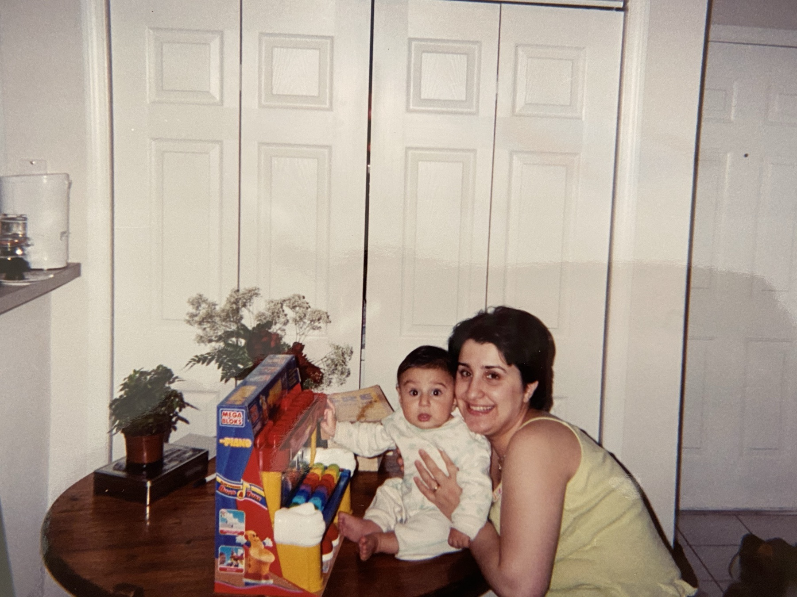
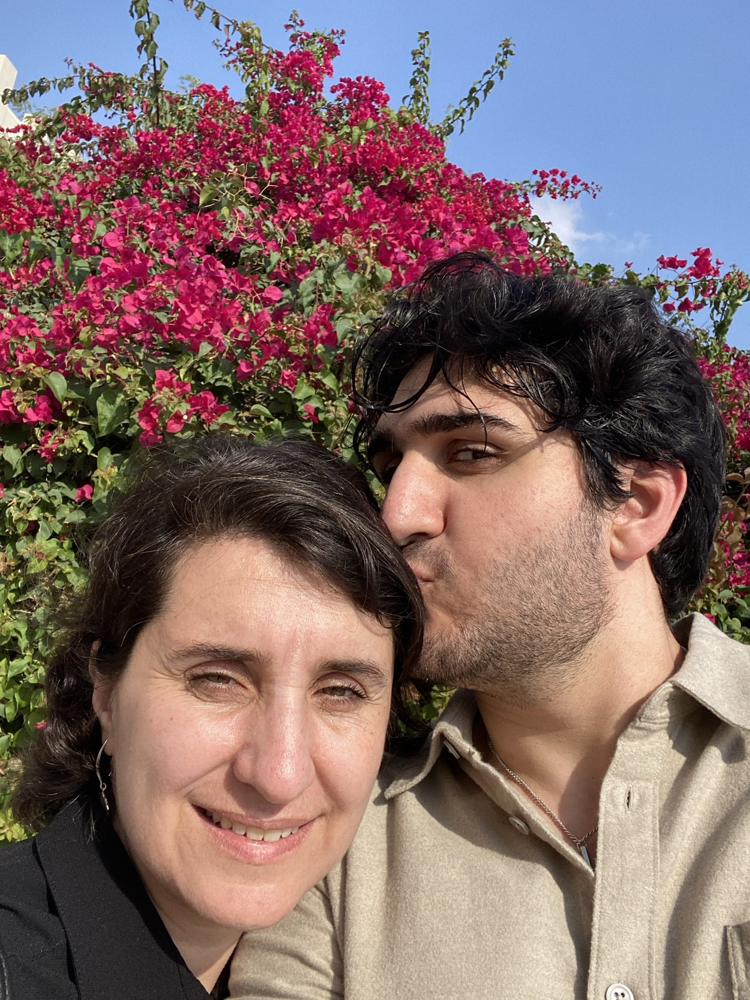
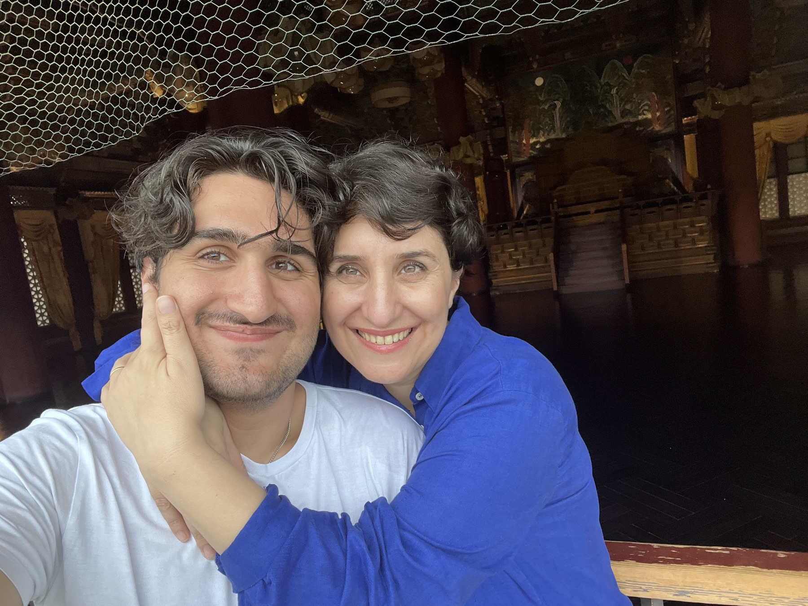
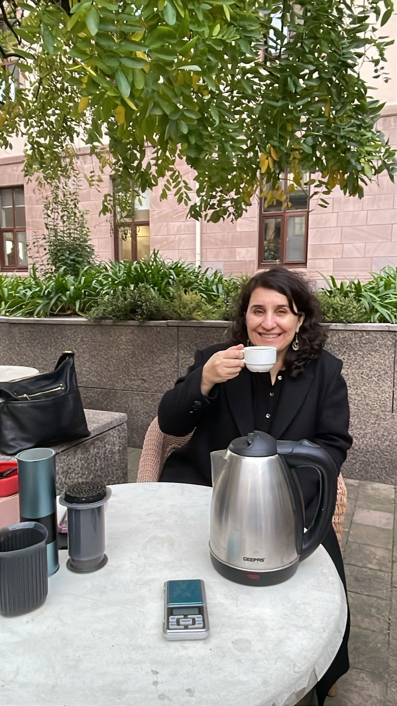
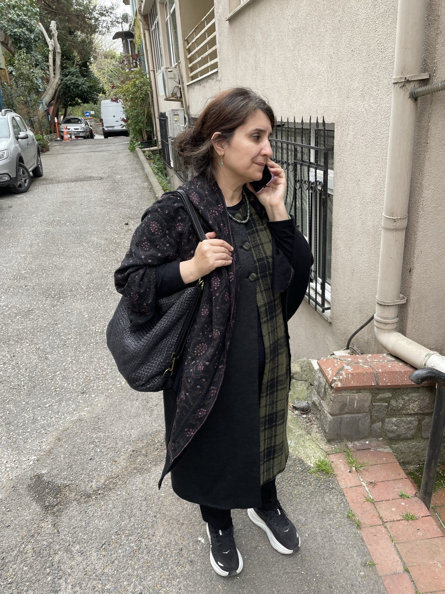
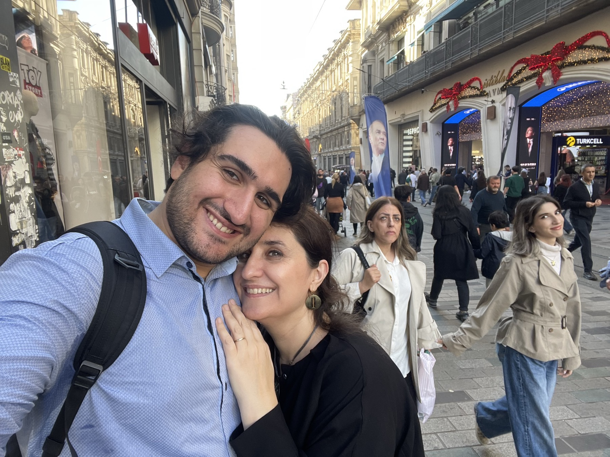

Doğum günün kutlu olsun, anne.
Allah sana mutluluk, huzur ve neşe dolu nice yıllar daha nasip etsin.
Bugün senin günün. Yavaşça aşağı kaydır, küçük bir hediyem var.
Doğum günün kutlu olsun, anne.
Allah sana mutluluk, huzur ve neşe dolu nice yıllar daha nasip etsin.

Sana teşekkür ederim, bana her zaman destek olduğun için.
Beni koşulsuz sevdiğin için.
En küçük ayrıntıları bile düşündüğün için.

Bu kadar harika bir anne olduğun için.
Bizim için yaptığın onca fedakârlık için.

Her zaman içimi dökebildiğim biri olduğun için.
Sırdaşım olduğun için.

Söz veriyorum, her zaman, her yerde sana kahveni ben yapacağım
ne zaman istersen, oradayım.
Bu fotoğrafı geçen gün çektim, çünkü o an “ne kadar zarif bir kadın” diye düşündüm kendi kendime.
gerçekten çok zarifsin, anne.
Son zamanlarda ikimizden çektiğim en sevdiğim fotoğraf bu.
Gözlerin o kadar güzel parlıyor ki
ışığını hep koru, anne.Akademik olsun, kişisel olsun, eriştiğim hiçbir şey sen olmadan mümkün olmazdı.
İyi ki varsın, iyi ki benim annemsin.
Seni çok seviyorum.